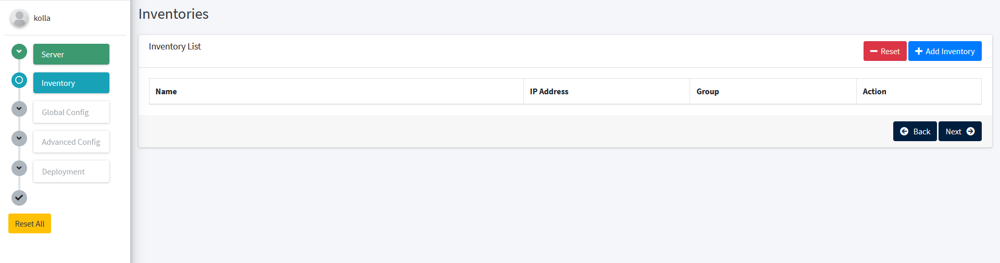
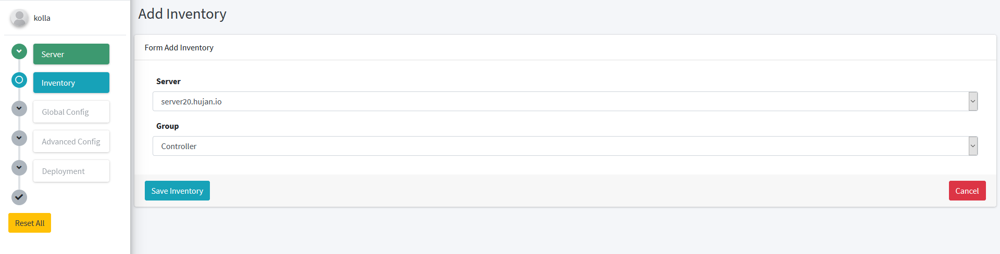
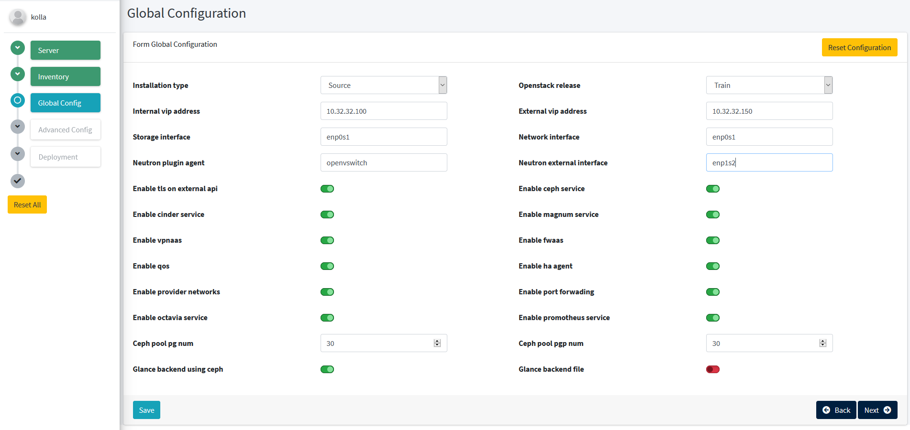

Installer Menu
The installer menu is used to start deployment. On this menu you can select which machine will use for controller node, compute node and more.
To start deployment go to Installer menu.

From this page, you can select which machine to deploy. From this entry Hujan will automaticaly create inventory list.

After that select save server and next to inventory page. On this page you can select the server role, which will be added to kolla-ansible inventory.

Click on Add Inventory.

Click Save Inventory and next to Globals Configuration menu.

On Global Configuration menu you can customize your openstack configuration base on globals.yml from kolla-ansible. Then click deploy.